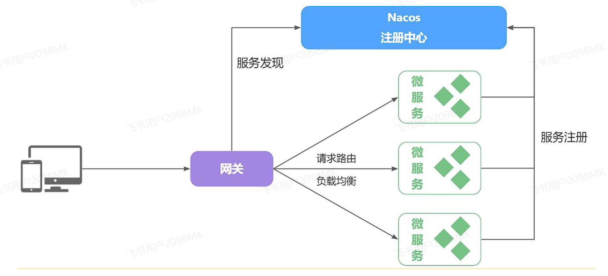
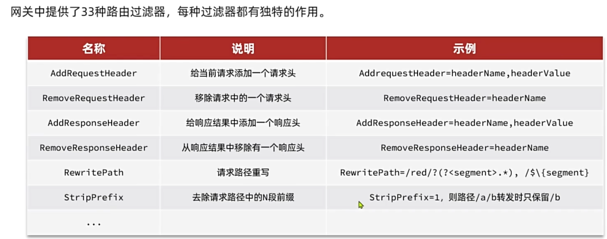

网关
由于每个微服务都有不同的地址或端口，入口不同，在与前端联调的时候就会发现一些问题：
-
请求不同数据时要访问不同的入口，需要维护多个入口地址
-
前端无法调用nacos，无法实时更新服务列表
单体架构时我们只需要完成一次用户登录、身份校验，就可以在所有业务中获取到用户信息。而微服务拆分后，每个微服务都独立部署，这就存在一些问题：
-
每个微服务都需要编写登录校验、用户信息获取的功能吗？
-
当微服务之间调用时，该如何传递用户信息？
认识网关¶
顾明思议，网关就是网络的关口。数据在网络间传输，从一个网络传输到另一网络时就需要经过网关来做数据的路由和转发以及数据安全的校验
现在，微服务网关就起到同样的作用。前端请求不能直接访问微服务，而是请求网关：
-
网关可以做安全控制，也就是登录身份校验，校验通过才放行
-
通过认证后，网关再根据请求判断应该访问哪个微服务，将请求转发过去

在SpringCloud当中，提供了两种网关实现方案：
-
Netflix Zuul：早期实现，目前已经淘汰
-
Spring Cloud Gateway：基于Spring的WebFlux技术，完全支持响应式编程，吞吐能力更强
快速入门¶
接下来，先利用网关实现请求路由。由于网关本身也是一个独立的微服务，因此也需要创建一个模块开发功能。大概步骤如下：
-
创建网关微服务
-
引入SpringCloudGateway、NacosDiscovery依赖
-
编写启动类
-
配置网关路由
相关依赖
<!--网关-->
<dependency>
<groupId>org.springframework.cloud</groupId>
<artifactId>spring-cloud-starter-gateway</artifactId>
</dependency>
<!--nacos discovery-->
<dependency>
<groupId>com.alibaba.cloud</groupId>
<artifactId>spring-cloud-starter-alibaba-nacos-discovery</artifactId>
</dependency>
<!--负载均衡-->
<dependency>
<groupId>org.springframework.cloud</groupId>
<artifactId>spring-cloud-starter-loadbalancer</artifactId>
</dependency>
配置文件
server:
port: 8080
spring:
# spring服务配置
application:
name: gateway
# SpringCloud配置
cloud:
# Nacos注册中心配置
nacos:
server-addr: localhost:8848
# 网关配置
gateway:
routes:
- id: item-service
uri: lb://item-service
predicates:
- Path=/items/**,/search/**
- id: user-service
uri: lb://user-service
predicates:
- Path=/users/**,/addresses/**
路由属性¶
-
id：路由的唯一标示 -
predicates：路由断言，其实就是匹配条件 -
filters：路由过滤条件 -
uri：路由目标地址，lb://代表负载均衡，从注册中心获取目标微服务的实例列表，并且负载均衡选择一个访问。
这里重点关注predicates，也就是路由断言。SpringCloudGateway中支持的断言类型有很多：
| 名称 | 说明 | 示例 |
|---|---|---|
| After | 是某个时间点后的请求 | - After=2037-01-20T17:42:47.789-07:00[America/Denver] |
| Before | 是某个时间点之前的请求 | - Before=2031-04-13T15:14:47.433+08:00[Asia/Shanghai] |
| Between | 是某两个时间点之前的请求 | - Between=2037-01-20T17:42:47.789-07:00[America/Denver], 2037-01-21T17:42:47.789-07:00[America/Denver] |
| Cookie | 请求必须包含某些cookie | - Cookie=chocolate, ch.p |
| Header | 请求必须包含某些header | - Header=X-Request-Id, \d+ |
| Host | 请求必须是访问某个host（域名） | - Host=.somehost.org,.anotherhost.org |
| Method | 请求方式必须是指定方式 | - Method=GET,POST |
| Path | 请求路径必须符合指定规则 | - Path=/red/{segment},/blue/** |
| Query | 请求参数必须包含指定参数 | - Query=name, Jack或者- Query=name |
| RemoteAddr | 请求者的ip必须是指定范围 | - RemoteAddr=192.168.1.1/24 |
| weight | 权重处理 |

网关登录校验¶
思路分析¶
登录一般是基于JWT来实现的，校验JWT的算法复杂，而且需要用到秘钥。如果每个微服务都去做登录校验，这就存在着两大问题：
-
每个微服务都需要知道JWT的秘钥，不安全
-
每个微服务重复编写登录校验代码、权限校验代码
既然网关是所有微服务的入口，一切请求都需要先经过网关。我们完全可以把登录校验的工作放到网关去做，这样之前的问题就解决了：
-
只需要在网关和用户服务保存秘钥
-
只需要在网关开发登录校验功能

不过，这里存在几个问题：
-
网关路由是配置的，请求转发是Gateway内部代码，我们如何在转发之前做登录校验？
-
网关校验JWT之后，如何将用户信息传递给微服务？
-
微服务之间也会相互调用，这种调用不经过网关，又该如何传递用户信息？
网关过滤器¶
登录校验必须在请求转发到微服务之前做，否则就失去了意义。而网关的请求转发是Gateway内部代码实现的，要想在请求转发之前做登录校验，就必须了解Gateway内部工作的基本原理

网关过滤器链中的过滤器有两种：
-
GatewayFilter：路由过滤器，作用范围比较灵活，可以是任意指定的路由Route. -
GlobalFilter：全局过滤器，作用范围是所有路由，不可配置。
GatewayFilter和GlobalFilter这两种过滤器的方法签名完全一致：
/**
* 处理请求并将其传递给下一个过滤器
* @param exchange 当前请求的上下文，其中包含request、response等各种数据
* @param chain 过滤器链，基于它向下传递请求
* @return 根据返回值标记当前请求是否被完成或拦截，chain.filter(exchange)就放行了。
*/
Mono<Void> filter(ServerWebExchange exchange, GatewayFilterChain chain);
自定义过滤器¶
1.GlobalFilter
@Component
public class PrintAnyGlobalFilter implements GlobalFilter, Ordered {
@Override
public Mono<Void> filter(ServerWebExchange exchange, GatewayFilterChain chain) {
// 编写过滤器逻辑
System.out.println("未登录，无法访问");
// 放行
// return chain.filter(exchange);
// 拦截
ServerHttpResponse response = exchange.getResponse();
response.setRawStatusCode(401);
return response.setComplete();
}
@Override
public int getOrder() {
// 过滤器执行顺序，值越小，优先级越高
return 0;
}
}
2.GatewayFilter
自定义GatewayFilter不是直接实现GatewayFilter，而是继承AbstractGatewayFilterFactory。
@Component
public class PrintAnyGatewayFilterFactory extends AbstractGatewayFilterFactory<Object> {
@Override
public GatewayFilter apply(Object config) {
return new GatewayFilter() {
@Override
public Mono<Void> filter(ServerWebExchange exchange, GatewayFilterChain chain) {
// 获取请求
ServerHttpRequest request = exchange.getRequest();
// 编写过滤器逻辑
System.out.println("过滤器执行了");
// 放行
return chain.filter(exchange);
}
};
}
}
3.在配置文件中使用
spring:
cloud:
gateway:
default-filters:
- PrintAny # 此处直接以自定义的GatewayFilterFactory类名称前缀类声明过滤器
另外，这种过滤器还可以支持动态配置参数，不过实现起来比较复杂，示例
@Component
public class PrintAnyGatewayFilterFactory // 父类泛型是内部类的Config类型
extends AbstractGatewayFilterFactory<PrintAnyGatewayFilterFactory.Config> {
@Override
public GatewayFilter apply(Config config) {
// OrderedGatewayFilter是GatewayFilter的子类，包含两个参数：
// - GatewayFilter：过滤器
// - int order值：值越小，过滤器执行优先级越高
return new OrderedGatewayFilter(new GatewayFilter() {
@Override
public Mono<Void> filter(ServerWebExchange exchange, GatewayFilterChain chain) {
// 获取config值
String a = config.getA();
String b = config.getB();
String c = config.getC();
// 编写过滤器逻辑
System.out.println("a = " + a);
System.out.println("b = " + b);
System.out.println("c = " + c);
// 放行
return chain.filter(exchange);
}
}, 100);
}
// 自定义配置属性，成员变量名称很重要，下面会用到
@Data
static class Config{
private String a;
private String b;
private String c;
}
// 将变量名称依次返回，顺序很重要，将来读取参数时需要按顺序获取
@Override
public List<String> shortcutFieldOrder() {
return List.of("a", "b", "c");
}
// 返回当前配置类的类型，也就是内部的Config
@Override
public Class<Config> getConfigClass() {
return Config.class;
}
}
在配置文件中使用
spring:
cloud:
gateway:
default-filters:
- PrintAny=1,2,3 # 注意，这里多个参数以","隔开，将来会按照shortcutFieldOrder()方法返回的参数顺序依次复制
登录校验过滤器¶
自定义GlobalFilter以实现登录校验
@Component
@RequiredArgsConstructor
@EnableConfigurationProperties(AuthProperties.class)
public class AuthGlobalFilter implements GlobalFilter, Ordered {
private final JwtTool jwtTool;
private final AuthProperties authProperties;
// 包含通配符的路径匹配器，由Spring提供
private final AntPathMatcher antPathMatcher = new AntPathMatcher();
@Override
public Mono<Void> filter(ServerWebExchange exchange, GatewayFilterChain chain) {
// 1.获取Request
ServerHttpRequest request = exchange.getRequest();
// 2.判断是否不需要拦截
if(isExclude(request.getPath().toString())){
// 无需拦截，直接放行
return chain.filter(exchange);
}
// 3.获取请求头中的token
String token = null;
List<String> headers = request.getHeaders().get("Authorization");
if (!CollUtils.isEmpty(headers)) {
token = headers.get(0);
}
// 4.校验并解析token
Long userId = null;
try {
userId = jwtTool.parseToken(token);
} catch (UnauthorizedException e) {
// 如果无效，拦截
ServerHttpResponse response = exchange.getResponse();
response.setRawStatusCode(401);
return response.setComplete();
}
// TODO 5.如果有效，传递用户信息
System.out.println("userId = " + userId);
// 6.放行
return chain.filter(exchange);
}
private boolean isExclude(String antPath) {
for (String pathPattern : authProperties.getExcludePaths()) {
if(antPathMatcher.match(pathPattern, antPath)){
return true;
}
}
return false;
}
@Override
public int getOrder() {
return 0;
}
}
用户信息向下游传递¶
首先，我们修改登录校验拦截器的处理逻辑，保存用户信息到请求头中：
// TODO: 传递用户信息
ServerWebExchange build = exchange.mutate()
.request(builder -> builder.header("user-info", userInfo))
.build();
// 放行
return chain.filter(build);
在通用模块common中编写拦截器获取用户信息
public class UserInfoInterceptor implements HandlerInterceptor {
@Override
public boolean preHandle(HttpServletRequest request, HttpServletResponse response, Object handler) throws Exception {
// 1.获取请求头中的用户信息
String userInfo = request.getHeader("user-info");
// 2.判断是否为空
if (StrUtil.isNotBlank(userInfo)) {
// 不为空，保存到ThreadLocal
UserContext.setUser(Long.valueOf(userInfo));
}
// 3.放行
return true;
}
@Override
public void afterCompletion(HttpServletRequest request, HttpServletResponse response, Object handler, Exception ex) throws Exception {
// 移除用户
UserContext.removeUser();
}
}
由于拦截器需要配置才能生效，需编写配置类来配置登录拦截器
@Configuration
@ConditionalOnClass(DispatcherServlet.class)
public class MvcConfig implements WebMvcConfigurer {
@Override
public void addInterceptors(InterceptorRegistry registry) {
// 添加自定义拦截器
registry.addInterceptor(new UserInfoInterceptor());
}
}
Note
许多服务模块都引用了该通用模块，@ConditionalOnClass(DispatcherServlet.class注解保证了只有使用了SpringMVC的微服务才会自动配置，例如网关模块并没有基于SpringMVC,不加该注解会启动失败
不过，需要注意的是，这个配置类默认是不会生效的，因为它所在的包与其它微服务的扫描包不一致，无法被扫描到，因此无法生效。
基于SpringBoot的自动装配原理，我们要将其添加到resources目录下的META-INF/spring.factories文件中：
org.springframework.boot.autoconfigure.EnableAutoConfiguration=\
com.xxx.config.MvcConfig
OpenFeign传递用户¶
前端发起的请求都会经过网关再到微服务，由于我们之前编写的过滤器和拦截器功能，微服务可以轻松获取登录用户信息。
但有些业务是比较复杂的，请求到达微服务后还需要调用其它多个微服务。比如下单业务，流程如下：

下单的过程中，需要调用商品服务扣减库存，调用购物车服务清理用户购物车。而清理购物车时必须知道当前登录的用户身份。但是，订单服务调用购物车时并没有传递用户信息，购物车服务无法知道当前用户是谁！
由于微服务获取用户信息是通过拦截器在请求头中读取，因此要想实现微服务之间的用户信息传递，就必须在微服务发起调用时把用户信息存入请求头
微服务之间调用是基于OpenFeign来实现的，并不是我们自己发送的请求。我们如何才能让每一个由OpenFeign发起的请求自动携带登录用户信息呢？
这里要借助Feign中提供的一个拦截器接口：feign.RequestInterceptor
public interface RequestInterceptor {
/**
* Called for every request.
* Add data using methods on the supplied {@link RequestTemplate}.
*/
void apply(RequestTemplate template);
}
在通用模块中配置拦截器
public class DefaultFeignConfig {
@Bean
public Logger.Level feignLoggerLevel() {
return Logger.Level.FULL;
}
@Bean
public RequestInterceptor feignRequestInterceptor() {
return new RequestInterceptor() {
@Override
public void apply(RequestTemplate requestTemplate) {
Long userId = UserContext.getUser();
if (userId != null) {
requestTemplate.header("user-info", userId.toString());
}
}
};
}
}
Note
为使配置生效需要在服务启动类上添加@EnableFeignClients(basePackages = "com.xxx.api.client",defaultConfiguration = DefaultFeignConfig.class)
上一节：OpenFeign
下一节：配置中心